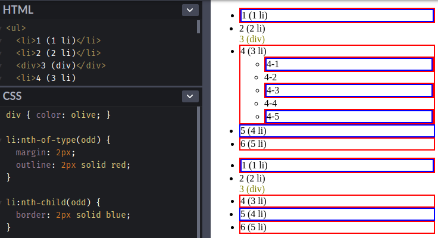

<!DOCTYPE html><html><head><meta charset="utf-8"><title>重新認識 CSS - Pseudo-class (偽類) (2) | Titangene Blog</title><meta http-equiv="X-UA-Compatible" content="IE=edge"><meta name="viewport" content="width=device-width,initial-scale=1,maximum-scale=1"><meta name="HandheldFriendly" content="True"><meta name="apple-mobile-web-app-capable" content="yes"><meta name="author" content="Titangene"><link rel="shortcut icon" href="/favicon.ico"><link rel="alternate" href="/atom.xml" title="Titangene Blog"><meta name="description" content="Selector (選擇器) 可用來選擇 HTML 和 XML 文件中的節點，並將樣式屬性綁定到文件 (HTML 和 XML) 中的元素上。當選擇器與某元素 match 的時候，就可以對選到的元素進行 CSS 樣式設定。本篇會介紹 structural pseudo-class (偽類)，包括 :root、nth-child、nth-of-type …等 selector。"><meta property="og:type" content="article"><meta property="og:title" content="重新認識 CSS - Pseudo-class (偽類) (2)"><meta property="og:url" content="https://titangene.github.io/article/css-selector-pseudo-class-2.html"><meta property="og:site_name" content="Titangene Blog"><meta property="og:description" content="Selector (選擇器) 可用來選擇 HTML 和 XML 文件中的節點，並將樣式屬性綁定到文件 (HTML 和 XML) 中的元素上。當選擇器與某元素 match 的時候，就可以對選到的元素進行 CSS 樣式設定。本篇會介紹 structural pseudo-class (偽類)，包括 :root、nth-child、nth-of-type …等 selector。"><meta property="og:locale" content="zh_TW"><meta property="og:image" content="https://titangene.github.io/images/cover/css.png"><meta property="article:published_time" content="2019-09-20T08:20:52.000Z"><meta property="article:modified_time" content="2019-10-14T00:23:24.000Z"><meta property="article:author" content="Titangene"><meta property="article:tag" content="IT 鐵人賽"><meta name="twitter:card" content="summary_large_image"><meta name="twitter:image" content="https://titangene.github.io/images/cover/css.png"><meta name="twitter:creator" content="@titangeneTW"><meta name="twitter:site" content="@titangene_blog"><meta property="fb:admins" content="100001106016019"><meta property="fb:app_id" content="2470546159839111"><meta property="og:image:width" content="1200"><meta property="og:image:height" content="630"><meta name="google-site-verification" content="AaJ39L7h-nWwJjXJMhAMtXSF6H6BUgGWXC80kYvLic8"><link href="https://fonts.googleapis.com/css2?family=Roboto&display=swap" rel="stylesheet"><link href="https://fonts.googleapis.com/css?family=Source+Code+Pro&display=swap" rel="stylesheet"><link rel="stylesheet" href="https://cdnjs.cloudflare.com/ajax/libs/font-awesome/5.13.0/css/all.min.css"><link rel="stylesheet" href="https://unpkg.com/gitalk/dist/gitalk.css"><link rel="stylesheet" href="/style.css"><script async src="https://www.googletagmanager.com/gtag/js?id=UA-129758206-1"></script><script>!function(a){function n(){dataLayer.push(arguments)}a.dataLayer=a.dataLayer||[],n("js",new Date),n("config","UA-129758206-1")}(window)</script><script>function setLoadingBarProgress(e){document.getElementById("loading-bar").style.width=e+"%"}</script><meta name="generator" content="Hexo 4.2.0"><link rel="alternate" href="/atom.xml" title="Titangene Blog" type="application/atom+xml"></head></html><body><div id="loading-bar-wrapper"><div id="loading-bar"></div></div><script>setLoadingBarProgress(20)</script><header class="l_header"><div class="wrapper"><div class="nav-main container container--flex"><a class="logo flat-box" href="/">Titangene Blog</a><div class="menu"><ul class="h-list"><li><a class="flat-box nav-home" href="/">Home</a></li><li><a class="flat-box nav-archives" href="/archives">Archives</a></li></ul><div class="underline"></div></div><div class="m_search"><form name="searchform" class="form u-search-form"><input type="text" class="input u-search-input" placeholder="Search"> <i class="fas fa-search"></i></form></div><ul class="switcher h-list"><li class="s-search"><a class="fas fa-search" href="javascript:void(0)"></a></li><li class="s-menu"><a class="fas fa-bars" href="javascript:void(0)"></a></li></ul></div><div class="nav-sub container container--flex"><a class="logo flat-box" href="/">Titangene Blog</a><ul class="switcher h-list"><li class="s-comment"><a class="far fa-comment-alt" href="javascript:void(0)"></a></li><li class="s-top"><a class="fas fa-arrow-up" href="javascript:void(0)"></a></li><li class="s-toc"><a class="fas fa-list-ol" href="javascript:void(0)"></a></li></ul></div></div></header><aside class="menu-phone"><nav><a href="/" class="nav-home nav">Home </a><a href="/archives" class="nav-archives nav">Archives</a></nav></aside><script>setLoadingBarProgress(40)</script><div class="l_body"><div class="container clearfix"><div class="l_main"><article id="post-css-selector-pseudo-class-2" class="post white-box article-type-post" itemscope itemprop="blogPost"><section class="meta"><h2 class="title"><a href="/article/css-selector-pseudo-class-2.html">重新認識 CSS - Pseudo-class (偽類) (2)</a></h2><span class="post-time"><span class="post-meta-item-icon"><i class="fa fa-calendar"></i> </span><span class="post-meta-item-text">發表於</span> <time title="建立時間：2019-09-20 16:20:52" itemprop="dateCreated datePublished" datetime="2019-09-20T16:20:52+08:00">2019-09-20 </time><span class="post-meta-divider">|</span> <span class="post-meta-item-icon"><i class="fa fa-calendar-check"></i> </span><span class="post-meta-item-text">更新於</span> <time title="修改時間：2019-10-14 08:23:24" itemprop="dateModified" datetime="2019-10-14T08:23:24+08:00">2019-10-14</time></span> <span class="comments-count"><span class="post-meta-divider">|</span> <span class="post-meta-item-icon"><i class="fas fa-comment"></i> </span><a href="https://titangene.github.io/article/css-selector-pseudo-class-2.html#comments" class="article-comment-count">留言</a></span><div class="post-category"><span class="post-meta-item-icon"><i class="fa fa-folder"></i> </span><span class="post-meta-item-text">分類於</span> <span itemprop="about" itemscope itemtype="http://schema.org/Thing"><a href="/categories/css/" itemprop="url" rel="index"><span itemprop="name">CSS</span></a></span></div></section><section class="toc-wrapper"><h3>目錄</h3><ol class="toc"><li class="toc-item toc-level-2"><a class="toc-link" href="#前言"><span class="toc-text">前言</span></a></li><li class="toc-item toc-level-2"><a class="toc-link" href="#Structural-pseudo-classes"><span class="toc-text">Structural pseudo-classes</span></a><ol class="toc-child"><li class="toc-item toc-level-3"><a class="toc-link" href="#root-pseudo-class"><span class="toc-text">:root pseudo-class</span></a></li><li class="toc-item toc-level-3"><a class="toc-link" href="#Child-indexed-Pseudo-classes"><span class="toc-text">Child-indexed Pseudo-classes</span></a></li><li class="toc-item toc-level-3"><a class="toc-link" href="#Typed-Child-indexed-Pseudo-classes"><span class="toc-text">Typed Child-indexed Pseudo-classes</span></a></li><li class="toc-item toc-level-3"><a class="toc-link" href="#nth-of-type-與-nth-child-的差異"><span class="toc-text">:nth-of-type() 與 :nth-child() 的差異</span></a></li><li class="toc-item toc-level-3"><a class="toc-link" href="#The-negation-pseudo-class"><span class="toc-text">The negation pseudo-class</span></a></li></ol></li><li class="toc-item toc-level-2"><a class="toc-link" href="#最後"><span class="toc-text">最後</span></a></li></ol></section><section class="article typo"><div class="article-entry" itemprop="articleBody"><p></p><p>Selector (選擇器) 可用來選擇 HTML 和 XML 文件中的節點，並將樣式屬性綁定到文件 (HTML 和 XML) 中的元素上。當選擇器與某元素 match 的時候，就可以對選到的元素進行 CSS 樣式設定。本篇會介紹 structural pseudo-class (偽類)，包括 <code>:root</code>、<code>nth-child</code>、<code>nth-of-type</code> …等 selector。</p><a id="more"></a><h2 id="前言"><a class="header-anchor" href="#前言"></a>前言</h2><blockquote><p>「重新認識 CSS」這個系列名稱的由來就如其名，我想要重新認識它。雖然以前就有學過 CSS，但這次想從 CSS Spec 中學到最原始的定義和內容，更加了解 CSS 的原理，讓我在切版的時候可以更加確定自己在做什麼，我踩到的雷只是因為我不夠了解它才會炸開。</p><p>在這 30 天的內容中，會將 Spec 內看到的資料整理成這個系列，也希望正在學 CSS 的各位可以更加了解它。另外我也會同時將文章發至我的 Blog，如果想直接看文內的程式碼 Demo 畫面，可以到我的 Blog 來看 😃。</p><p>本文同步發表於 iT 邦幫忙：<a href="https://ithelp.ithome.com.tw/articles/10218197" target="_blank" rel="noopener">重新認識 CSS - Pseudo-class (偽類) (2)</a></p><p>「重新認識 CSS」系列文章發文於：</p><ul><li><a href="https://ithelp.ithome.com.tw/users/20117586/ironman/2617" target="_blank" rel="noopener">iT 邦幫忙</a></li><li><a href="https://titangene.github.io/tags/it-%E9%90%B5%E4%BA%BA%E8%B3%BD/">Titangene Blog</a></li></ul></blockquote><p>之前有提到以下這些都是 simple selector：</p><ul><li>type selector</li><li>universal selector</li><li>attribute selector</li><li>class selector</li><li>ID selector</li><li>pseudo-class</li></ul><blockquote><p>本篇會介紹 pseudo-class，如果想了解其他 simple selector 可參閱之前介紹的 <a href="https://ithelp.ithome.com.tw/articles/10216566" target="_blank" rel="noopener">重新認識 CSS - Simple Selector &amp; Groups of selector</a>。</p></blockquote><p>如之前所說，pseudo-class 是以 <code>:</code> 為開頭，後面接著 pseudo-class 的名稱，有些會在後面加上括號 <code>()</code>，並在括號之間加上值。例如：<code>:nth-child(2)</code>。</p><div class="warning"><p>注意：</p><ul><li>pseudo-class 和 pseudo-element 不相同</li><li>pseudo-class 是以 <code>:</code> 為開頭</li><li>pseudo-element 是以 <code>::</code> 為開頭，但也可以以 <code>:</code> 為開頭，因為在舊版的 W3C Spec 中沒有將 pseudo-class 和 pseudo-element 區分成 <code>:</code> 和 <code>::</code>。如果你寫 pseudo-element 是用 <code>:</code>，大部份瀏覽器也還是會支援這種語法。</li></ul></div><h2 id="Structural-pseudo-classes"><a class="header-anchor" href="#Structural-pseudo-classes"></a>Structural pseudo-classes</h2><p>當使用 structural pseudo-class 時，它會計算各 sibling 元素的位置：</p><ul><li>不計算 standalone (獨立) text 和其他非元素節點</li><li>index 編號從 1 開始</li><li>只適用於 document tree 中的元素，不會 match 到 pseudo-element</li></ul><h3 id="root-pseudo-class"><a class="header-anchor" href="#root-pseudo-class"></a><code>:root</code> pseudo-class</h3><ul><li><code>:root</code> pseudo-class 代表文件的 root 元素</li><li>在 DOM 文件中，<code>:root</code> pseudo-class 與 <a href="https://dom.spec.whatwg.org/#document" target="_blank" rel="noopener"><code>Document</code></a> 物件的 root 元素會 match</li><li>在 HTML 中，root 元素就是 <a href="https://html.spec.whatwg.org/multipage/semantics.html#the-html-element" target="_blank" rel="noopener"><code>&lt;html&gt;</code></a> 元素</li></ul><h3 id="Child-indexed-Pseudo-classes"><a class="header-anchor" href="#Child-indexed-Pseudo-classes"></a>Child-indexed Pseudo-classes</h3><p>此 pseudo-class 會根據 <a href="https://dom.spec.whatwg.org/#concept-tree-inclusive-sibling" target="_blank" rel="noopener">inclusive sibling</a> 之間的 index 來選擇元素。</p><p>選擇 index 為多少的 sibling (兄弟，同層) 元素，元素的第一個子元素的 index 是 1。</p><p>只有開頭為 <code>nth</code> 的 Child-indexed Pseudo-classes 和 Typed Child-indexed Pseudo-classes 都可以在 <code>()</code> 括號裡面可以使用下面這幾種值：</p><ul><li><code>an + b</code>：<ul><li><code>n</code> 可以是任何​​正整數或 0 的數值</li><li><code>a</code> 和 <code>b</code> 的值必須是整數 (正數、負數或 0)</li><li>當 <code>a</code> 和 <code>b</code> 都大於 0 時，可以更好的將 sibling 元素劃分為元素群組 (groups of a elements)，並選擇每個群組的第 <code>b</code> 個元素， 例如：<ul><li><code>3n + 1</code> 可以 match 到第 1、4、7…等子元素</li><li><code>0n + 5</code> 等同於 <code>5</code></li></ul></li><li>當 <code>a</code> 為負值，且 <code>n &gt;= 0</code> 時，只有 <code>an + b</code> 為正值才可以代表 document tree 中的元素</li></ul></li><li><code>odd</code>：奇數的所有 sibling 元素，等同於 <code>2n + 1</code></li><li><code>even</code>偶數的所有 sibling 元素，等同於 <code>2n</code></li></ul><blockquote><p>語法詳情可參閱 Selectors Level 3 的「<a href="https://www.w3.org/TR/selectors-3/#nth-child-pseudo" target="_blank" rel="noopener">6.6.5.2. :nth-child() pseudo-class</a>」章節部份。</p></blockquote><p>Child-indexed Pseudo-classes 有下面這些 selector：</p><ul><li><code>:nth-child(an+b)</code>：<ul><li>選擇指定 index 的所有 sibling 元素，從第一個 sibling 元素開始數</li></ul></li><li><code>:nth-last-child(an+b)</code>：<ul><li>選擇指定 index 的所有 sibling 元素，從最後一個 sibling 元素開始數</li></ul></li><li><code>:first-child()</code>：<ul><li>選擇 sibling 列表中的第一個元素</li><li>等同於 <code>:nth-child(1)</code></li></ul></li><li><code>:last-child()</code>：<ul><li>選擇 sibling 列表中的最後一個元素</li><li>等同於 <code>:nth-last-child(1)</code></li></ul></li><li><code>:only-child()</code>：<ul><li>選擇沒有 sibling 的元素</li><li>等同於 <code>:first-child:last-child</code> 或 <code>:nth-child(1):nth-last-child(1)</code>，但 <a href="https://www.w3.org/TR/CSS22/cascade.html#specificity" target="_blank" rel="noopener">specificity</a> 較低</li></ul></li></ul><h3 id="Typed-Child-indexed-Pseudo-classes"><a class="header-anchor" href="#Typed-Child-indexed-Pseudo-classes"></a>Typed Child-indexed Pseudo-classes</h3><p>此 pseudo-class 類似於 Child Index Pseudo-classes，但此 pseudo-class 是基於 sibling 列表中相同 <a href="https://www.w3.org/TR/selectors-4/#type-selectors" target="_blank" rel="noopener">type (tag 名稱)</a> 的元素之間的元素 index 來解析。</p><p>Typed Child-indexed Pseudo-classes 有下面這些 selector：</p><ul><li><code>:nth-of-type(an+b)</code>：<ul><li>選擇指定 index 的所有相同 type 的 sibling 元素，從第一個 sibling 元素開始數</li></ul></li><li><code>:nth-last-of-type(an+b)</code><ul><li>選擇指定 index 的所有相同 type 的 sibling 元素，從最後一個 sibling 元素開始數</li></ul></li><li><code>:first-of-type()</code><ul><li>選擇 sibling 列表中的第一個相同 type 的元素</li><li>等同於 <code>:nth-of-type(1)</code></li></ul></li><li><code>:last-of-type()</code><ul><li>選擇 sibling 列表中的最後一個相同 type 的元素</li><li>等同於 <code>:nth-last-of-type(1)</code></li></ul></li><li><code>:only-of-type()</code><ul><li>選擇沒有相同 type 的 sibling 元素</li><li>等同於 <code>:first-of-type:last-of-type</code> 或 <code>:nth-of-type(1):nth-last-of-type(1)</code>，但 <a href="https://www.w3.org/TR/CSS22/cascade.html#specificity" target="_blank" rel="noopener">specificity</a> 較低</li></ul></li></ul><h3 id="nth-of-type-與-nth-child-的差異"><a class="header-anchor" href="#nth-of-type-與-nth-child-的差異"></a><code>:nth-of-type()</code> 與 <code>:nth-child()</code> 的差異</h3><p>下面是 <code>:nth-of-type()</code> 和 <code>:nth-child()</code> 的範例：</p><figure class="highlight html"><table><tr><td class="gutter"><pre><span class="line">1</span><br><span class="line">2</span><br><span class="line">3</span><br><span class="line">4</span><br><span class="line">5</span><br><span class="line">6</span><br><span class="line">7</span><br><span class="line">8</span><br><span class="line">9</span><br><span class="line">10</span><br><span class="line">11</span><br><span class="line">12</span><br><span class="line">13</span><br><span class="line">14</span><br><span class="line">15</span><br><span class="line">16</span><br><span class="line">17</span><br><span class="line">18</span><br><span class="line">19</span><br><span class="line">20</span><br><span class="line">21</span><br><span class="line">22</span><br><span class="line">23</span><br><span class="line">24</span><br></pre></td><td class="code"><pre><code class="hljs html"><span class="hljs-tag">&lt;<span class="hljs-name">ul</span>&gt;</span><br>  <span class="hljs-tag">&lt;<span class="hljs-name">li</span>&gt;</span>1 (1 li)<span class="hljs-tag">&lt;/<span class="hljs-name">li</span>&gt;</span><br>  <span class="hljs-tag">&lt;<span class="hljs-name">li</span>&gt;</span>2 (2 li)<span class="hljs-tag">&lt;/<span class="hljs-name">li</span>&gt;</span><br>  <span class="hljs-tag">&lt;<span class="hljs-name">div</span>&gt;</span>3 (div)<span class="hljs-tag">&lt;/<span class="hljs-name">div</span>&gt;</span><br>  <span class="hljs-tag">&lt;<span class="hljs-name">li</span>&gt;</span>4 (3 li)<br>    <span class="hljs-tag">&lt;<span class="hljs-name">ul</span> <span class="hljs-attr">class</span>=<span class="hljs-string">"nested-list"</span>&gt;</span><br>      <span class="hljs-tag">&lt;<span class="hljs-name">li</span>&gt;</span>4-1<span class="hljs-tag">&lt;/<span class="hljs-name">li</span>&gt;</span><br>      <span class="hljs-tag">&lt;<span class="hljs-name">li</span>&gt;</span>4-2<span class="hljs-tag">&lt;/<span class="hljs-name">li</span>&gt;</span><br>      <span class="hljs-tag">&lt;<span class="hljs-name">li</span>&gt;</span>4-3<span class="hljs-tag">&lt;/<span class="hljs-name">li</span>&gt;</span><br>      <span class="hljs-tag">&lt;<span class="hljs-name">li</span>&gt;</span>4-4<span class="hljs-tag">&lt;/<span class="hljs-name">li</span>&gt;</span><br>      <span class="hljs-tag">&lt;<span class="hljs-name">li</span>&gt;</span>4-5<span class="hljs-tag">&lt;/<span class="hljs-name">li</span>&gt;</span><br>    <span class="hljs-tag">&lt;/<span class="hljs-name">ul</span>&gt;</span><br>  <span class="hljs-tag">&lt;/<span class="hljs-name">li</span>&gt;</span><br>  <span class="hljs-tag">&lt;<span class="hljs-name">li</span>&gt;</span>5 (4 li)<span class="hljs-tag">&lt;/<span class="hljs-name">li</span>&gt;</span><br>  <span class="hljs-tag">&lt;<span class="hljs-name">li</span>&gt;</span>6 (5 li)<span class="hljs-tag">&lt;/<span class="hljs-name">li</span>&gt;</span><br><span class="hljs-tag">&lt;/<span class="hljs-name">ul</span>&gt;</span><br><span class="hljs-tag">&lt;<span class="hljs-name">ul</span>&gt;</span><br>  <span class="hljs-tag">&lt;<span class="hljs-name">li</span>&gt;</span>1 (1 li)<span class="hljs-tag">&lt;/<span class="hljs-name">li</span>&gt;</span><br>  <span class="hljs-tag">&lt;<span class="hljs-name">li</span>&gt;</span>2 (2 li)<span class="hljs-tag">&lt;/<span class="hljs-name">li</span>&gt;</span><br>  <span class="hljs-tag">&lt;<span class="hljs-name">div</span>&gt;</span>3 (div)<span class="hljs-tag">&lt;/<span class="hljs-name">div</span>&gt;</span><br>  <span class="hljs-tag">&lt;<span class="hljs-name">li</span>&gt;</span>4 (3 li)<span class="hljs-tag">&lt;/<span class="hljs-name">li</span>&gt;</span><br>  <span class="hljs-tag">&lt;<span class="hljs-name">li</span>&gt;</span>5 (4 li)<span class="hljs-tag">&lt;/<span class="hljs-name">li</span>&gt;</span><br>  <span class="hljs-tag">&lt;<span class="hljs-name">li</span>&gt;</span>6 (5 li)<span class="hljs-tag">&lt;/<span class="hljs-name">li</span>&gt;</span><br><span class="hljs-tag">&lt;/<span class="hljs-name">ul</span>&gt;</span><br></code></pre></td></tr></table></figure><figure class="highlight css"><table><tr><td class="gutter"><pre><span class="line">1</span><br><span class="line">2</span><br><span class="line">3</span><br><span class="line">4</span><br><span class="line">5</span><br><span class="line">6</span><br><span class="line">7</span><br><span class="line">8</span><br><span class="line">9</span><br><span class="line">10</span><br></pre></td><td class="code"><pre><code class="hljs css"><span class="hljs-selector-tag">div</span> &#123; <span class="hljs-attribute">color</span>: olive; &#125;<br><br><span class="hljs-selector-tag">li</span><span class="hljs-selector-pseudo">:nth-of-type(odd)</span> &#123;<br>  <span class="hljs-attribute">margin</span>: <span class="hljs-number">2px</span>;<br>  <span class="hljs-attribute">outline</span>: <span class="hljs-number">2px</span> solid red;<br>&#125;<br><br><span class="hljs-selector-tag">li</span><span class="hljs-selector-pseudo">:nth-child(odd)</span> &#123;<br>  <span class="hljs-attribute">border</span>: <span class="hljs-number">2px</span> solid blue;<br>&#125;<br></code></pre></td></tr></table></figure><p>這個範例有兩個 <code>ul</code> 元素，裡面各有五個 <code>li</code> 元素，而且在與第二個 <code>li</code> 元素同層的後面加上一個 <code>div</code> 元素，這是用來驗證 <code>:nth-of-type()</code> 和 <code>:nth-child()</code> 的差異用的。另外，在第一個 <code>ul</code> 元素裡面還有一個巢狀 <code>&lt;ul class=&quot;nested-list&quot;&gt;</code> 元素，它放在第四個 <code>li</code> 元素裡面，這是用來巢狀的元素也可以被 selector 選到。</p><p>每個元素的前面都有一個編號，代表在 sibling 元素之間的 index。而後面的括號是用來告訴你它是 <code>li</code> 元素還是 <code>div</code> 元素，如果是 <code>li</code> 元素就會註記是第幾個 <code>li</code> 元素。例如：<code>4 (3 li)</code> 就代表是第四個 sibling 元素，並且是第三個 <code>li</code> 元素。</p><p>可以看到那些有紅色 <code>outline</code> 的元素都有 match 到 <code>li:nth-of-type(odd)</code>，因為此 pseudo-class 是以 <code>of-type</code> 為結尾，所以此 selector 只會找相同 type 的 sibling 元素 (OS：就很像是忽略了 <code>div</code> 元素的存在)。只要是奇數的 sibling 元素都會被選起來，套用紅色的 outline 樣式。</p><p>而那些有藍色 <code>border</code> 的元素都有 match 到 <code>li:nth-child(odd)</code>，因為此 pseudo-class 是以 <code>child</code> 為結尾，所以此 selector 會直接找是 <code>li</code> 的 sibling 元素，並且要是奇數的 sibling 元素。不過，第三個 sibling 元素是 <code>div</code> 元素，不是 <code>li</code> 元素，因此 <code>li:nth-child(odd)</code> 就不會 match 到此 <code>div</code> 元素</p><p>而巢狀 <code>&lt;ul class=&quot;nested-list&quot;&gt;</code> 元素裡面只有五個 <code>li</code> 元素，沒有其他 type 的元素，所以都會選到奇數的 sibling 元素 (因為沒有亂路的元素)。</p><p>Demo：<a href="https://codepen.io/titangene/pen/NWKEwmo" target="_blank" rel="noopener">Codepen 連結</a></p><p></p><iframe height="541" style="width:100%" scrolling="no" title=":nth-child &amp; :nth-of-type" src="https://codepen.io/titangene/embed/NWKEwmo/?height=541&theme-id=dark&default-tab=html,result" frameborder="no" allowtransparency="true" allowfullscreen>See the Pen <a href="https://codepen.io/titangene/pen/NWKEwmo/" target="_blank" rel="noopener">:nth-child &amp; :nth-of-type</a> by Titangene (<a href="https://codepen.io/titangene" target="_blank" rel="noopener">@titangene</a>) on <a href="https://codepen.io" target="_blank" rel="noopener">CodePen</a>.</iframe><h3 id="The-negation-pseudo-class"><a class="header-anchor" href="#The-negation-pseudo-class"></a>The negation pseudo-class</h3><p><code>:not(X)</code> 是一個函數符號，可將一個 simple selector (不包括 <code>:not(X)</code> 本身) 作為參數。<code>:not(X)</code> 代表不選擇 match 到 <code>X</code> simple selector 的元素。</p><blockquote><p>註：以下這些都是 simple selector：</p><ul><li>type selector：例如 <code>div</code></li><li>universal selector：例如 <code>*</code></li><li>attribute selector：例如 <code>div[foo]</code></li><li>class selector：例如 <code>.myclass</code></li><li>ID selector：例如 <code>#myid</code></li><li>pseudo-class：例如 <code>a:hover</code></li></ul></blockquote><p>不能巢狀使用，所以 <code>:not(:not(...))</code> 是無效的。另外請注意，因為 pseudo-element 不是 simple selector，所以 pseudo-element 不是 <code>:not()</code> 的有效參數。</p><p>例如：match HTML 文件中所有未被禁用的 <code>button</code> 元素：</p><figure class="highlight css"><table><tr><td class="gutter"><pre><span class="line">1</span><br></pre></td><td class="code"><pre><code class="hljs css"><span class="hljs-selector-tag">button</span><span class="hljs-selector-pseudo">:not(</span><span class="hljs-selector-attr">[disable]</span>)<br></code></pre></td></tr></table></figure><blockquote><p>註：<code>[disable]</code> 是 attribute selector，詳情請參閱我前幾天寫的「<a href="https://titangene.github.io/article/css-attribute-selector.html">重新認識 CSS - Attribute selector (屬性選擇器)</a>」。</p></blockquote><p>match 除了 <code>#titan</code> 元素之外的所有元素：</p><figure class="highlight css"><table><tr><td class="gutter"><pre><span class="line">1</span><br></pre></td><td class="code"><pre><code class="hljs css">*<span class="hljs-selector-pseudo">:not(</span><span class="hljs-selector-id">#titan</span>)<br></code></pre></td></tr></table></figure><blockquote><p>註：<code>#titan</code> 是 ID selector，詳情請參閱我前幾天寫的「<a href="https://titangene.github.io/article/css-selector-1.html">重新認識 CSS - Simple Selector &amp; Groups of selector</a>」。</p></blockquote><h2 id="最後"><a class="header-anchor" href="#最後"></a>最後</h2><p>今天介紹一些 structural pseudo-class，接下來幾天會接續介紹其他 selector。</p><p>資料來源：</p><ul><li><a href="https://www.w3.org/TR/CSS22/selector.html" target="_blank" rel="noopener">CSS 2.2 Specification - Selectors</a></li><li><a href="https://www.w3.org/TR/selectors-3/" target="_blank" rel="noopener">Selectors Level 3</a></li><li><a href="https://www.w3.org/TR/selectors-4/" target="_blank" rel="noopener">Selectors Level 4</a></li></ul></div><div class="article-tags tags"><a href="/tags/it-%E9%90%B5%E4%BA%BA%E8%B3%BD/" title="IT 鐵人賽">IT 鐵人賽</a></div></section><div class="article-share-links"><span>分享：</span> <a class="fab fa-facebook-f" title="Facebook" target="_blank" href="javascript:window.open('https://www.facebook.com/sharer.php?u=https%3A%2F%2Ftitangene.github.io%2Farticle%2Fcss-selector-pseudo-class-2.html', 'Share on Facebook','width=600, height=600')"></a> <a class="fab fa-twitter" title="Twitter" target="_blank" href="javascript:window.open('https://twitter.com/share?url=https%3A%2F%2Ftitangene.github.io%2Farticle%2Fcss-selector-pseudo-class-2.html&amp;text=重新認識 CSS - Pseudo-class (偽類) (2)&amp;hashtags=IT鐵人賽&amp;via=titangene_blog', 'Share on Twitter','width=600, height=260')"></a> <a class="fab fa-linkedin-in" title="Linkedin" target="_blank" href="javascript:window.open('https://www.linkedin.com/shareArticle?mini=true&amp;url=https%3A%2F%2Ftitangene.github.io%2Farticle%2Fcss-selector-pseudo-class-2.html&amp;title=重新認識 CSS - Pseudo-class (偽類) (2)', 'Share on Linkedin','width=600, height=600')"></a> <a class="fab fa-facebook-messenger" title="Facebook Messenger" target="_blank" href="javascript:window.open('http://www.facebook.com/dialog/send?app_id=2470546159839111&amp;link=https%3A%2F%2Ftitangene.github.io%2Farticle%2Fcss-selector-pseudo-class-2.html&amp;display=popup&amp;redirect_uri=https%3A%2F%2Fwww.facebook.com%2Fdialog%2Freturn%2Fclose%23_%3D_', 'Send in Messenger','width=600, height=600')"></a> <a class="fab fa-telegram-plane" href="https://telegram.me/share/url?url=https%3A%2F%2Ftitangene.github.io%2Farticle%2Fcss-selector-pseudo-class-2.html&text=重新認識 CSS - Pseudo-class (偽類) (2)" target="_blank"></a></div><nav id="article-nav"><a href="/article/css-selector-pseudo-class-1.html" id="article-nav-prev" class="article-nav-link-wrap" title="重新認識 CSS - Pseudo-class (偽類) (1)" rel="prev"><strong class="article-nav-caption">Prev</strong><p class="article-nav-title">重新認識 CSS - Pseudo-class (偽類) (1)</p><i class="fas fa-angle-left"></i> </a><a href="/article/css-selector-pseudo-element.html" id="article-nav-next" class="article-nav-link-wrap" title="重新認識 CSS - Pseudo-element (偽元素)" rel="next"><strong class="article-nav-caption">Next</strong><p class="article-nav-title">重新認識 CSS - Pseudo-element (偽元素)</p><i class="fas fa-angle-right"></i></a></nav><section id="list_related_posts"><h2>相關文章</h2><ul class="related-posts"><li class="related-posts-item"><a class="related-posts-link" href="/article/css-formatting-context.html">重新認識 CSS - formatting context & independent formatting context</a><div class="related-posts-item-abstract">本篇將介紹 CSS 的 formatting context 和 independent formatting context。前言「重新認識 CSS」這個系列名稱的由來就如其名，我想要重新認識它。雖然以前就有學過 CS</div></li><li class="related-posts-item"><a class="related-posts-link" href="/article/css-media-type.html">重新認識 CSS - media type</a><div class="related-posts-item-abstract">如果同將一份文件應用在不同的 media 上呈現，就可以使用 media type 來指定適用的 media。本篇將介紹 CSS 的 media type。前言「重新認識 CSS」這個系列名稱的由來就如其名，我想要重新認</div></li><li class="related-posts-item"><a class="related-posts-link" href="/article/css-border.html">重新認識 CSS - Box model：border</a><div class="related-posts-item-abstract">本篇將介紹 CSS 的 Box model 中的 border。前言「重新認識 CSS」這個系列名稱的由來就如其名，我想要重新認識它。雖然以前就有學過 CSS，但這次想從 CSS Spec 中學到最原始的定義和內容，更加</div></li><li class="related-posts-item"><a class="related-posts-link" href="/article/css-series-catalog.html">重新認識 CSS - 總結 & 系列目錄</a><div class="related-posts-item-abstract">終於來到鐵人賽的最後一天！本篇對「重新認識 CSS」此系列做個總結，並整理此系列中的每篇文章可對應到哪些 CSS Spec。前言「重新認識 CSS」這個系列名稱的由來就如其名，我想要重新認識它。雖然以前就有學過 CSS，</div></li><li class="related-posts-item"><a class="related-posts-link" href="/article/css-cascading-and-specificity.html">重新認識 CSS - Cascading & Specificity</a><div class="related-posts-item-abstract">CSS 可以在同份文件上使用多個 style sheet 來設定文件的樣式。如果你在不同 style sheet 內對同一個元素或屬性設定值時，就會 CSS 會透過 cascading 這個特性來解決這個衝突。本篇將介紹</div></li><li class="related-posts-item"><a class="related-posts-link" href="/article/css-position.html">重新認識 CSS - position</a><div class="related-posts-item-abstract">本篇將介紹 CSS 的 position 屬性，包括 static、relative、absolute 和 fixed。前言「重新認識 CSS」這個系列名稱的由來就如其名，我想要重新認識它。雖然以前就有學過 CSS，但這</div></li></ul></section><section class="comments" id="comments"><h2>討論區</h2><div id="gitalk-container"></div><div id="disqus_thread" style="margin-top:20px"><noscript>Please enable JavaScript to view the <a href="https://disqus.com/?ref_noscript" target="_blank" rel="noopener">comments powered by Disqus.</a></noscript></div></section></article><script>window.subData={title:"重新認識 CSS - Pseudo-class (偽類) (2)",tools:!0}</script></div><aside class="l_side"><section class="m_widget about"><div class="avatar-section"><style>.avatar-cover{background:url(/images/avatar_cover.jpg) 0 10%/cover no-repeat}</style><div class="avatar-cover"></div></div><div class="header">Titangene</div><div class="content"><div class="desc">利用 blog 紀錄學習歷程</div></div><div class="content"><meta itemprop="url" content="https://titangene.github.io"><div class="social-wrapper"><a itemprop="sameAs" href="https://github.com/titangene" class="social github" target="_blank" rel="external"><span class="fab fa-github-alt"></span> </a><a itemprop="sameAs" href="https://www.facebook.com/titangene.tw" class="social facebook" target="_blank" rel="external"><span class="fab fa-facebook-square"></span> </a><a itemprop="sameAs" href="https://www.instagram.com/titangene/" class="social instagram" target="_blank" rel="external"><span class="fab fa-instagram"></span> </a><a itemprop="sameAs" href="https://www.flickr.com/photos/titangene" class="social flickr" target="_blank" rel="external"><span class="fab fa-flickr"></span> </a><a itemprop="sameAs" href="/atom.xml" class="social rss" target="_blank" rel="external"><span class="fas fa-rss"></span></a></div></div></section><section class="m_widget facebook_page"><div class="fb-page" data-href="https://www.facebook.com/titangene.blog/" data-width="250" data-small-header="false" data-adapt-container-width="false" data-hide-cover="false" data-show-facepile="true"><blockquote cite="https://www.facebook.com/titangene.blog/" class="fb-xfbml-parse-ignore"><p><a href="https://www.facebook.com/titangene.blog/" class="social facebook" target="_blank"><span class="fab fa-facebook-square"></span></a></p><p><a href="https://www.facebook.com/titangene.blog/" target="_blank" rel="noopener">Titangene Blog</a></p><p>Loading...</p></blockquote></div></section><section class="m_widget recent"><div class="header">Recents</div><div class="content"><ul class="entry"><li><a itemprop="url" class="flat-box" href="/article/jest-typescript.html"><time>2020-05-31</time><div class="name">Jest + TypeScript：建置測試環境</div></a></li><li><a itemprop="url" class="flat-box" href="/article/jest-build-test-env.html"><time>2020-05-24</time><div class="name">Jest：建置測試環境 (包含 Babel)</div></a></li><li><a itemprop="url" class="flat-box" href="/article/sass-import-rule.html"><time>2020-05-17</time><div class="name">Sass：@import rule</div></a></li><li><a itemprop="url" class="flat-box" href="/article/sass-use-rule.html"><time>2020-05-10</time><div class="name">Sass：@use rule</div></a></li><li><a itemprop="url" class="flat-box" href="/article/dart-sass.html"><time>2020-05-03</time><div class="name">Dart Sass 介紹 (使用與安裝)</div></a></li><li><a itemprop="url" class="flat-box" href="/article/npm-and-yarn-cheatsheet.html"><time>2020-04-26</time><div class="name">npm / Yarn 套件管理器指令比對 cheatsheet</div></a></li><li><a itemprop="url" class="flat-box" href="/article/nvm.html"><time>2020-04-19</time><div class="name">nvm：安裝、切換不同 Node.js 版本的管理器</div></a></li></ul></div></section></aside><script>setLoadingBarProgress(60)</script></div></div><footer id="footer" class="clearfix"><div class="social-wrapper"><a href="https://github.com/titangene" class="social github" target="_blank" rel="external"><span class="fab fa-github-alt"></span> </a><a href="https://www.facebook.com/titangene.tw" class="social facebook" target="_blank" rel="external"><span class="fab fa-facebook-square"></span> </a><a href="https://www.instagram.com/titangene/" class="social instagram" target="_blank" rel="external"><span class="fab fa-instagram"></span> </a><a href="https://www.flickr.com/photos/titangene" class="social flickr" target="_blank" rel="external"><span class="fab fa-flickr"></span> </a><a href="/atom.xml" class="social rss" target="_blank" rel="external"><span class="fas fa-rss"></span></a></div><div>© 2018 - 2020 <span itemprop="copyrightHolder">Titangene</span></div><div>Powered by <a href="https://hexo.io/" target="_blank" class="codename" rel="external noopener">Hexo</a> - Theme <a href="https://github.com/stkevintan/hexo-theme-material-flow" target="_blank" class="codename" rel="external noopener">MaterialFlow</a></div><div><a rel="license noopener" href="http://creativecommons.org/licenses/by-nc-sa/4.0/" target="_blank" rel="external noopener"></a></div></footer><script>setLoadingBarProgress(80)</script><script src="//cdnjs.cloudflare.com/ajax/libs/jquery/2.1.4/jquery.min.js"></script><script src="https://cdnjs.cloudflare.com/ajax/libs/clipboard.js/2.0.0/clipboard.min.js"></script><script src="https://unpkg.com/gitalk/dist/gitalk.min.js"></script><script src="/js/jquery.fitvids.js"></script><script>var SEARCH_SERVICE="hexo",ROOT="/";ROOT.endsWith("/")||(ROOT+="/")</script><script src="/js/search.js"></script><script src="/js/app.js"></script><script src="/js/clipboard-use.js"></script><script type="text/javascript">var gitalk=new Gitalk({clientID:"dd1684f31ee17e25c22b",clientSecret:"4b51bb4a5996b04d58821a6e3da8558f23da4cdf",id:window.location.pathname,repo:"hexo-blog",owner:"titangene",admin:"titangene",distractionFreeMode:"true"});gitalk.render("gitalk-container")</script><script>var disqus_shortname="titangene-blog",disqus_config=function(){this.page.url="https://titangene.github.io/article/css-selector-pseudo-class-2.html",this.page.identifier="article/css-selector-pseudo-class-2.html",this.page.title="重新認識 CSS - Pseudo-class (偽類) (2)"};!function(){var e=document.createElement("script");e.async=!0,e.src="//"+disqus_shortname+".disqus.com/embed.js",e.setAttribute("data-timestamp",""+new Date),(document.head||document.body).appendChild(e)}()</script><script id="dsq-count-scr" src="https://titangene-blog.disqus.com/count.js" async></script><div id="fb-root"></div><script>window.fbAsyncInit=function(){FB.init({appId:"2470546159839111",autoLogAppEvents:!0,xfbml:!0,version:"v2.11"}),FB.AppEvents.logPageView()},function(e,n,t){var o,s=e.getElementsByTagName(n)[0];e.getElementById(t)||((o=e.createElement(n)).id=t,o.src="//connect.facebook.net/zh_TW/sdk.js",s.parentNode.insertBefore(o,s))}(document,"script","facebook-jssdk")</script><script>setLoadingBarProgress(100)</script></body>